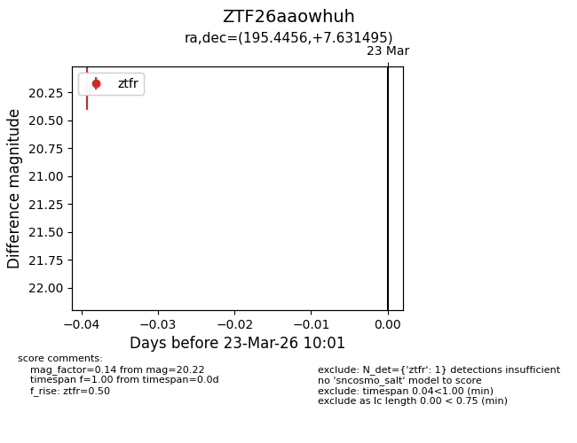
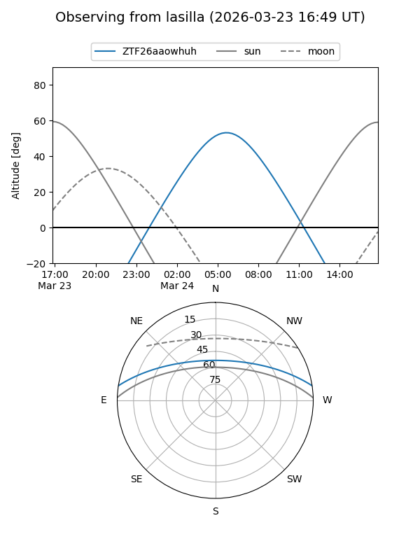
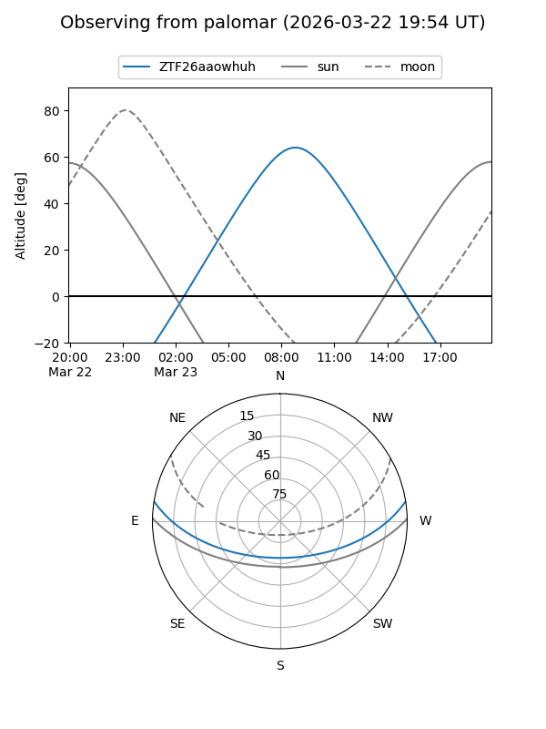

ZTF26aaowhuh
Target ZTF26aaowhuh at 2026-03-23 10:03
Aliases and brokers:
FINK: link
Lasair: link
ALeRCE: link
alt names
ZTF26aaowhuh (ztf,fink_ztf)
Coordinates:
equatorial (ra, dec) = 195.4456,+7.63149
equatorial (HMS+DMS) = 13:01:46.96,+07:37:53.38
galactic (l, b) = (310.5744,+70.34959)
Flags:
Photometry:
last ztfr=20.22
1 ztfr detections
Lightcurve

Visibility


Additional plots